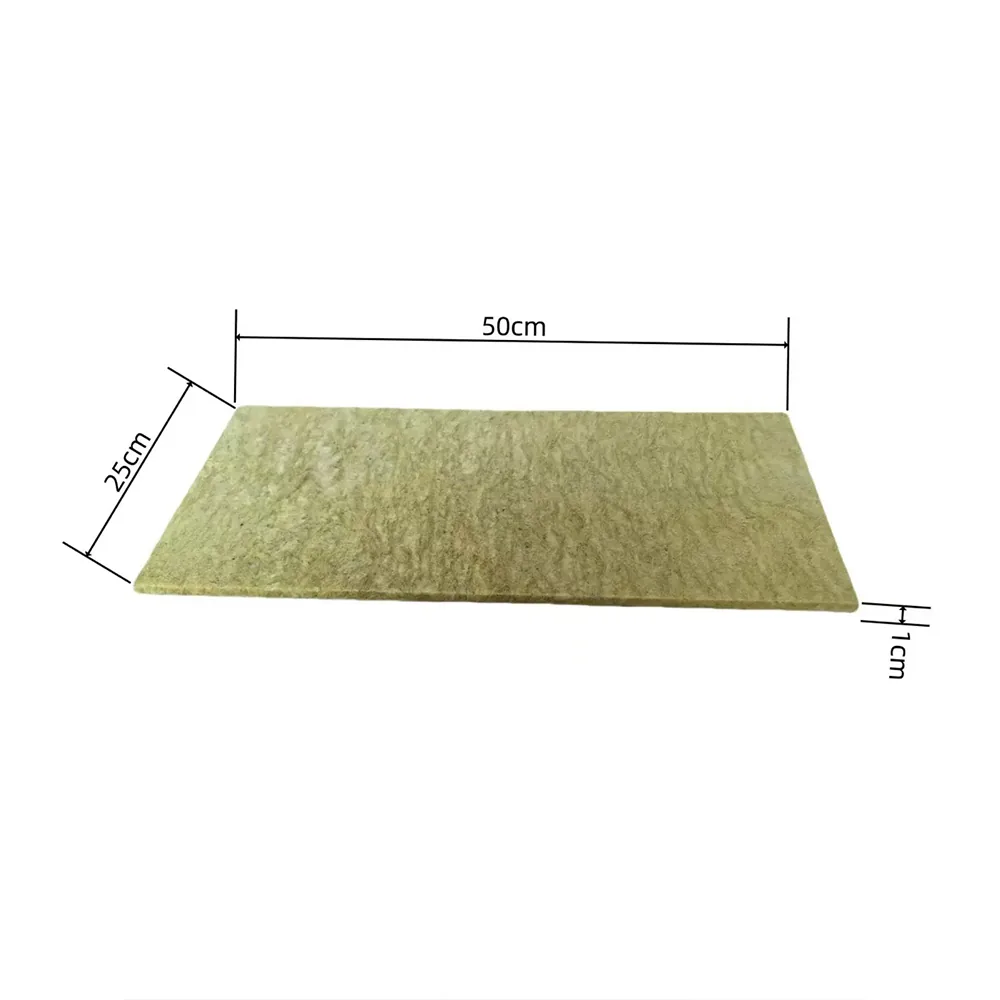

Substrate matched to crop and climate, with protocols, equipment and data
We manufacture growing media for controlled-environment agriculture and rice seedling nurseries, delivered with complete technical protocols and dedicated production lines. Three granted invention patents, two provincial and national achievement registrations, four technical protocols — all numbers verifiable.

Substance backed by numbers, not adjectives
Patent holder unit
Three granted invention patents, used by the company under licence
Protocol drafter
Four complete technical protocols compiled across propagation, cultivation and strawberry
First completion unit
Provincial and national registrations 20250949 / 3392025Y1039
Patent numbers ZL 2021 1 0621707.4 / ZL 2021 1 0620521.7 / ZL 2024 1 0839951.1; registrations 20250949 (Hebei provincial) / 3392025Y1039 (national).
Four agri-media lines, one legacy line
Card footprint reflects the 2029 target revenue mix, not current sales.
→ Separate business line: building & industrial rockwool (accounted separately) →
Four layers: not a truckload of wool, but a system that runs
Material is only layer one. Above it sit protocol, equipment and intelligence — each layer states what you receive.
Material
A substrate grade matched to crop and climate, with density, fibre diameter and wettability data
Protocol
Complete protocols: 12 chapters propagation, 14 chapters growing media, 16 chapters strawberry
Equipment
Dedicated production line and supporting equipment, first line commissioned 2027
Intelligence In development
Process layer from 2027; cultivation and greenhouse layers from 2028 (in development)
Solid is actual, hatched is target
Capacity figures appear only here. Agri-media is CNY 13,000—17,000 per tonne; building rockwool board is CNY 3,000—3,500 per tonne. The two lines are accounted separately and are never summed.
140,000 t / CNY 2bn is a 2029 planning target, not current capacity or revenue.
Four protocols and three patent numbers
Complete technical protocols
- Technical protocol for intensive rockwool seedling propagation
12 ch. · 2 appendices · 12 tables - Technical protocol for inorganic-fibre rockwool growing media
14 ch. · 3 appendices · 17 tables - Technical protocol for inorganic-fibre strawberry propagation and cultivation
16 ch. · 4 appendices · 21 tables - Technical protocol for inorganic-fibre rice seedling media and machine transplanting
Compiled; release planned for 2027
Granted invention patents
| Title | Patent no. | Certificate | Granted |
|---|---|---|---|
| Rockwool substrate for seedling propagation and its preparation | ZL 2021 1 0621707.4 | Cert. No. 6399938 | 2023-10-13 |
| Rockwool substrate for cultivation and its preparation | ZL 2021 1 0620521.7 | Cert. No. 5850856 | 2023-04-07 |
| Inorganic fibre substrate for desertification control and its preparation | ZL 2024 1 0839951.1 | Cert. No. 8546783 | 2025-12-05 |
The patents above are used by the company under licence from the patent holder; licence documents are available on request.
Four steps, from survey to operating review
Survey
Crop, area, water, climate, management
Substrate grade and cultivation method recommendation
Match
Your cropping plan
Grade + relevant protocol clauses + parameter sheet
Deliver
Site and staff
Supply + line equipment + on-site training
Review
Operating data
Process parameter review and adjustment
Send us the crop, the area and the region
You receive a matched substrate grade, the relevant protocol clauses and a parameter sheet. Reply within one business day; bulk orders and demonstration visits use the same channel.
For building and industrial rockwool, state it separately; we route it to the relevant team, and it is never merged with agri-media figures.